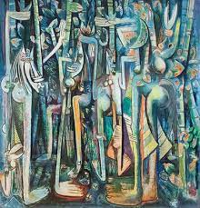

142. The Jungle. Wilfredo Lam. 1943 CE Gouache on paper mounted on canvas.
- Form
- Crescent-shaped faces suggest African masks and the god Elegua
- Rounded backs, thin arms and legs, pronounce hands and feet
- Long vertical lines suggest sugarcane, which is grown in fields, not jungles.
- Content
- Cuban-born artist whose career took him to Europe and the United States
- The artist was interested in Cuba’s mixture of Hispanic and African cultures
- This work was “intended to communicate a psychic state”
- The work addresses the history of slavery in colonial Cuba
- Influences include African sculpture; Cubist works; Surrealist
- The painting contrasts a Cuban landscape with a tourist image of Cuba as a tropical paradise